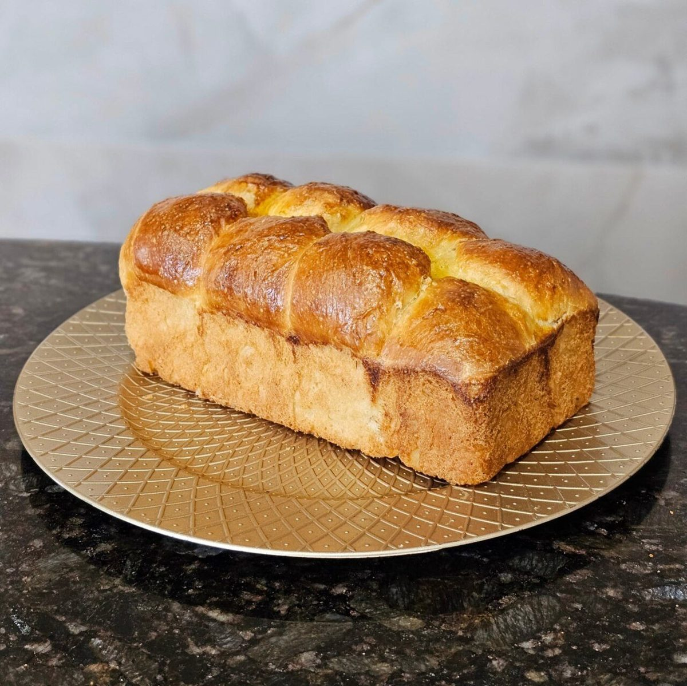
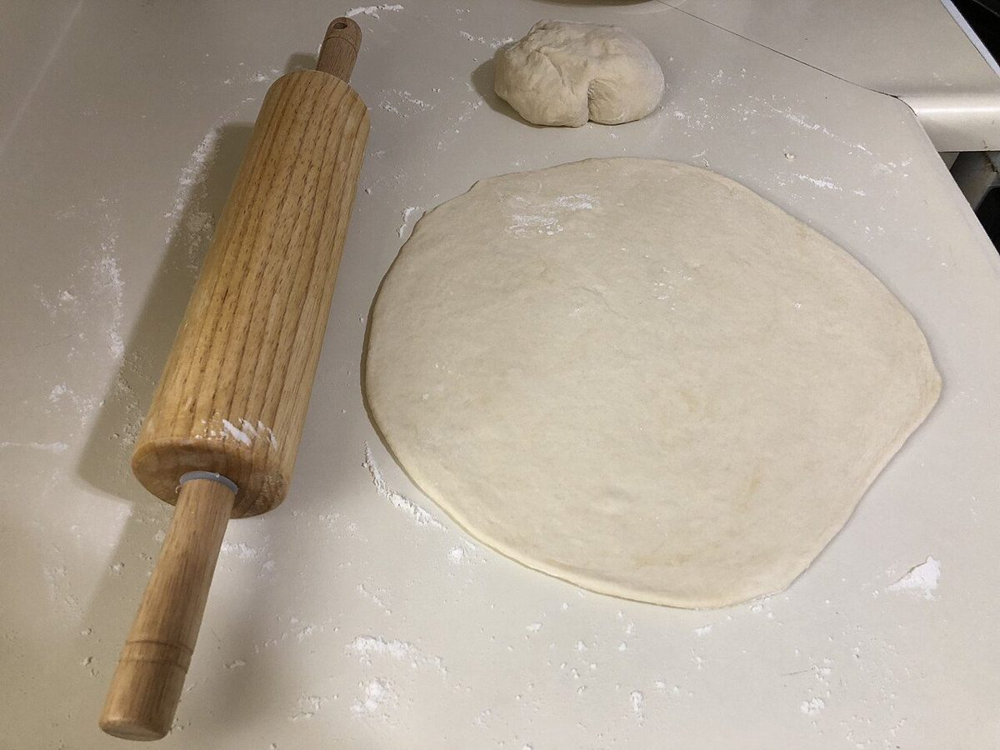

店のこと
店のこと
お店について確認できているのは、所在地・電話番号・Instagramのアカウントです。
確認できていること
- 店名は「WEEKENDS」、業種はベーカリー
- 所在地は長野県安曇野市穂高有明7784-11(〒399-8301)
- 電話番号は0263-50-9758
- Instagramは @weekends_bakery
- 営業時間・定休日・メニュー・価格・ご予約・駐車場は準備中

想像してみる
「WEEKENDS」という名前から
ここは制作側が想像して書いた部分です。お店の実際の様子・考え・商品とは関係がありません。
由来は分かりません。制作側は、週末という言葉から、ひと息つく日のカレンダーを思い浮かべました。ほかの曜日は灰色の細い帯、土と日だけがひろい色の欄。このサイトのデザインは、その連想だけで作っています。

